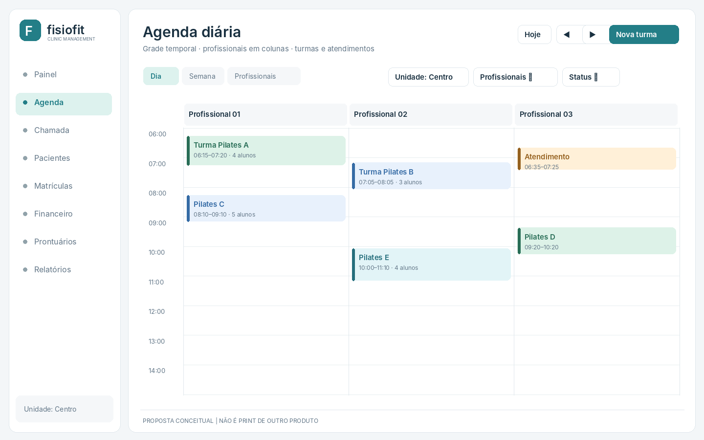

Imagem externa indisponível.
Abra o link para consultar a fonte original.
Abra o link para consultar a fonte original.
Estudo próprio · offline
01 · Jane · agenda diária por profissional
Observar: Esquema conceitual original para discussão de layout e interação.
Ver mosaico ↗